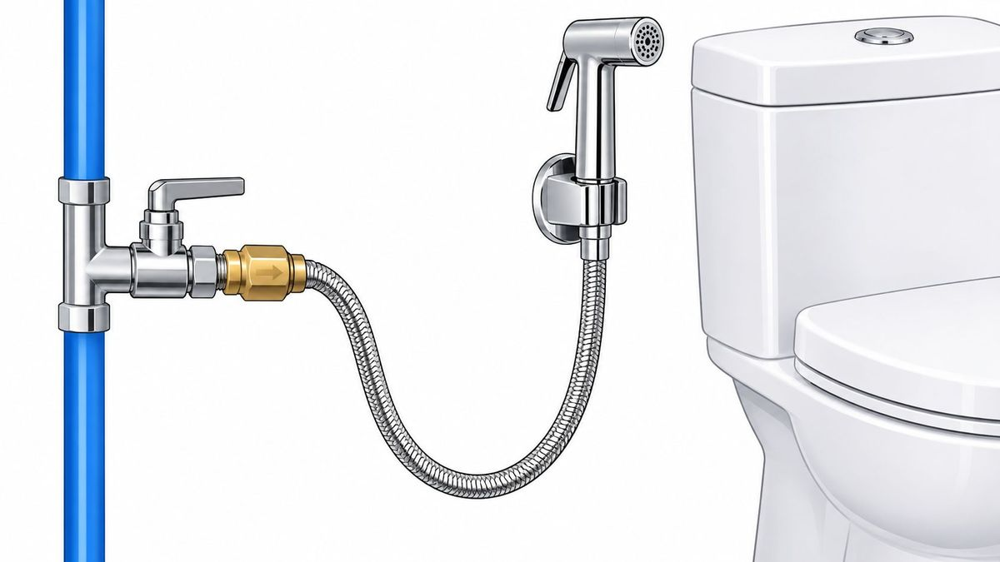

гигиенический душ подключается тройником к холодной воде унитаза: шаровый кран 1/2", обратный клапан, шланг 1,2–1,5 м и смеситель или кран. Высота установки — 600–800 мм от пола, 200–300 мм сбоку от унитаза. Комплект — 2 000–12 000 руб., установка — 2 500–6 000 руб. Без обратного клапана вода из бачка может пойти в водопровод.
Комплект: что нужно
| Элемент | Назначение | Цена |
|---|---|---|
| Тройник 1/2" | отвод от линии унитаза | 300–900 руб. |
| Шаровый кран 1/2" | отключение душа | 500–1 500 руб. |
| Обратный клапан | защита от обратного тока | 300–900 руб. |
| Смеситель или кран | подача и температура | 1 500–9 000 руб. |
| Шланг 1,2–1,5 м | подвод к лейке | 400–1 500 руб. |
| Лейка с держателем | распыление | 500–3 000 руб. |
Комплект с термостатическим смесителем дороже на 3 000–7 000 руб., но держит заданные 35–38 °C: для гигиенических процедур это важнее, чем экономия.
Схема подключения

| Вариант | Плюсы | Минусы |
|---|---|---|
| От линии унитаза | просто, без штробления | только холодная вода |
| От смесителя раковины | есть горячая вода | нужен тройник и место под шланг |
| Отдельная линия от коллектора | стабильное давление | штроба и 4 000–9 000 руб. |
| Смеситель с термостатом | температура 35–38 °C | дороже на 3 000–7 000 руб. |
Самый частый вариант — тройник на подводке унитаза. Он занимает 30–40 мм, не требует штробления и снимается за 10 минут.
Высота и место установки
| Параметр | Значение | Почему |
|---|---|---|
| Высота смесителя | 600–800 мм от пола | удобно сидя и стоя |
| Отступ от унитаза | 200–300 мм сбоку | не мешает локтю |
| Длина шланга | 1,2–1,5 м | достаёт до чаши, не лежит на полу |
| Давление в линии | 1,5–6 бар | выше 6 бар — нужен редуктор |
Шланг длиннее 1,5 м провисает и цепляет пол: в месте изгиба он трескается через 1–2 года. Оптимально — 1,2 м при установке сбоку от унитаза.
Смеситель, кран или термостат
| Тип | Цена | Точность температуры | Когда брать |
|---|---|---|---|
| Обычный кран | 500–1 500 руб. | нет, только холодная | бюджетный вариант |
| Смеситель рычажный | 1 500–5 000 руб. | ±5 °C | есть ГВС рядом |
| Термостатический | 5 000–12 000 руб. | ±1 °C | дети, пожилые люди |
Термостат защищает от ожога при скачке давления: при падении холодной воды он перекрывает поток за 1–2 секунды.
Защита от протечек и обратного тока
- Обратный клапан — обязателен: без него вода из бачка может попасть в питьевой водопровод.
- Шаровый кран перед шлангом — отключает душ без перекрытия стояка.
- Шланг в оплётке из нержавейки служит 3–5 лет, резиновый — 1–2 года.
- Ревизионный люк или доступ к тройнику — на случай замены за 10 минут.
Если плитка уже уложена
| Ситуация | Решение | Цена |
|---|---|---|
| Есть ревизионный люк у унитаза | тройник и кран внутри люка | 2 000–4 500 руб. |
| Люка нет, подводка открыта | тройник на виду, кран с декоративной чашкой | 2 500–5 000 руб. |
| Подводка в стене без доступа | вывод наружу через отверстие 30 мм с манжетой | 4 000–9 000 руб. |
| Нужна горячая вода | тройник от смесителя раковины или отдельная линия | 3 500–12 000 руб. |
Сверлить плитку нужно коронкой с водяным охлаждением на малых оборотах: без охлаждения глазурь скалывается, и ремонт отверстия стоит дороже самого душа. Отверстие закрывают декоративной манжетой или хромированной чашкой.
Если санузел ещё не облицован, вывод под смеситель закладывают на 600–800 мм с закладной в стене: смеситель крепится к ней, а не к плитке. Крепление в плитку без закладной выдерживает 3–5 лет, потом дюбель расшатывается.
При давлении выше 6 бар шланг и картридж крана изнашиваются в 2–3 раза быстрее: на вводе ставят редуктор 3–4 бар за 2 000–5 000 руб. При давлении ниже 1,5 бар лейка даёт слабую струю — проверяют фильтр-сетку и обратный клапан, они забиваются первыми.
Порядок работ
- Перекрыть воду на вводе или на подводке к унитазу.
- Слить остаток из бачка и подводки.
- Установить тройник, кран и обратный клапан на подводку.
- Закрепить держатель лейки на стене на 600–800 мм.
- Подключить шланг, проверить герметичность под давлением.
- Отрегулировать температуру и напор, проверить отсутствие капель.
Смета 2026
| Вариант | Материалы | Работа | Итого |
|---|---|---|---|
| Кран + шланг от унитаза | 2 000–4 500 руб. | 2 500–4 000 руб. | 4 500–8 500 руб. |
| Смеситель рычажный | 3 500–8 000 руб. | 3 000–5 000 руб. | 6 500–13 000 руб. |
| Термостатический смеситель | 7 000–16 000 руб. | 3 500–6 000 руб. | 10 500–22 000 руб. |
Отдельная линия от коллектора с штробой — плюс 4 000–9 000 руб. и 1 день работ.
Ошибки и их цена
| Ошибка | Последствие | Исправление |
|---|---|---|
| Нет обратного клапана | вода из бачка в водопровод | установка клапана 500–1 200 руб. |
| Шланг 2 м и длиннее | провисает, трескается | замена шланга 400–1 500 руб. |
| Кран без доступа | не перекрыть при протечке | вскрытие короба |
| Установка на 1 000 мм | неудобно пользоваться | перенос 2 500–5 000 руб. |
Чек-лист перед установкой
- Обратный клапан в схеме есть.
- Шаровый кран доступен без вскрытия плитки.
- Шланг 1,2–1,5 м, в металлической оплётке.
- Держатель закреплён на 600–800 мм.
- Проверка под давлением 10 минут пройдена.
Частые вопросы
Можно ли подключить гигиенический душ к горячей воде?
Можно через смеситель, но не напрямую: температура ГВС 60–75 °C даёт ожог. Смеситель с термостатом держит 35–38 °C.
Нужен ли отдельный кран?
Да. Без крана душ находится под давлением постоянно, и при протечке шланга воду не перекрыть, не отключив унитаз.
Почему капает из лейки?
Износилась прокладка или картридж крана. Замена картриджа — 500–1 500 руб., прокладки — 200–500 руб.
Можно ли установить без сантехника?
Можно, если есть доступ к подводке и инструмент (разводной ключ, лён или фум-лента). Работа занимает 40–60 минут.
Что делать при слабом напоре?
Проверить обратный клапан и фильтр-сетку в тройнике: они забиваются за 6–12 месяцев. Промыть или заменить — 300–900 руб.
Сколько служит шланг?
В металлической оплётке — 3–5 лет, резиновый — 1–2 года. Менять при первых трещинах на внутренней трубке.
Можно ли поставить гигиенический душ в туалете без раковины?
Да, от подводки унитаза. Будет только холодная вода — для гигиенических процедур этого достаточно, но термостат не поставить.
Какой смеситель лучше для гигиенического душа?
С термостатом и кнопкой-фиксатором 38 °C: он защищает от ожога при скачке давления. Рычажный дешевле, но температуру приходится подбирать каждый раз.
Источники
Материал подготовлен с опорой на следующие документы и данные:
Дисклеймер
Материалы журнала «Ремонт на примерах» носят информационный характер. Приведённые цены, сроки и нормативы являются ориентировочными: они зависят от региона, состояния объекта, уровня исполнителей и текущей рыночной ситуации, поэтому не могут служить точной сметой или гарантией результата. Перед началом работ проконсультируйтесь со специалистами и проверяйте актуальные требования нормативных документов. Редакция не несёт ответственности за решения, принятые на основании этих материалов.